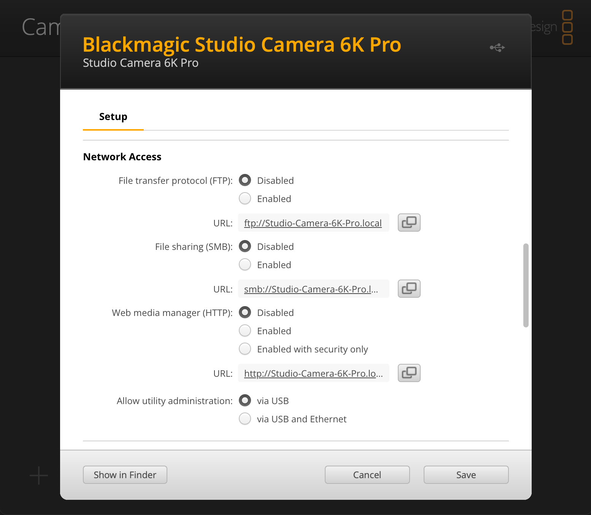
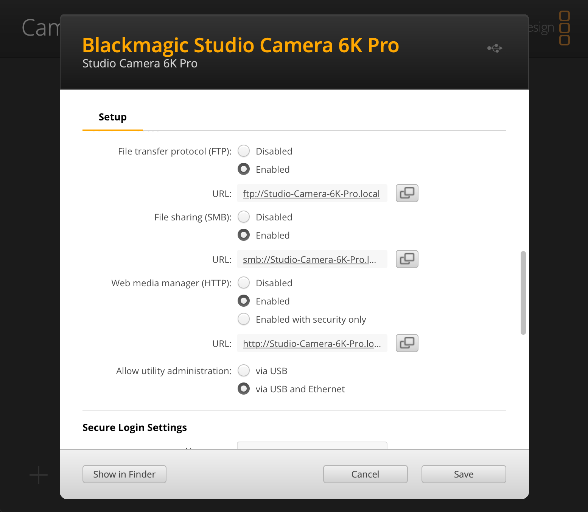
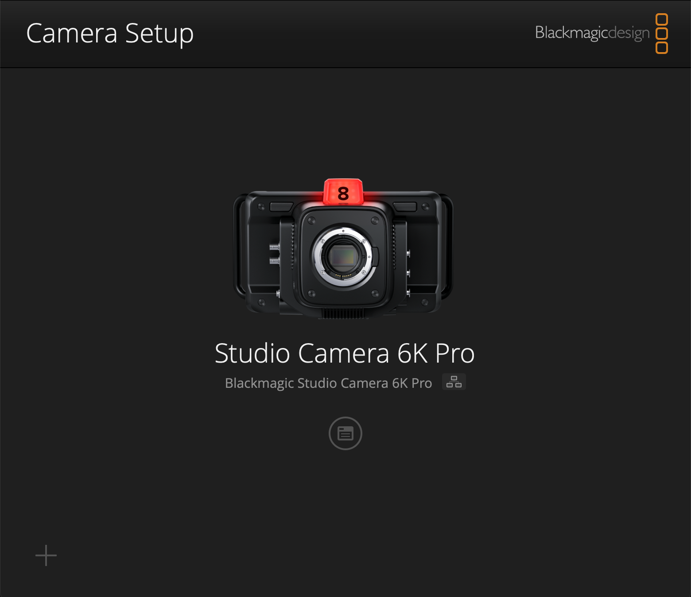
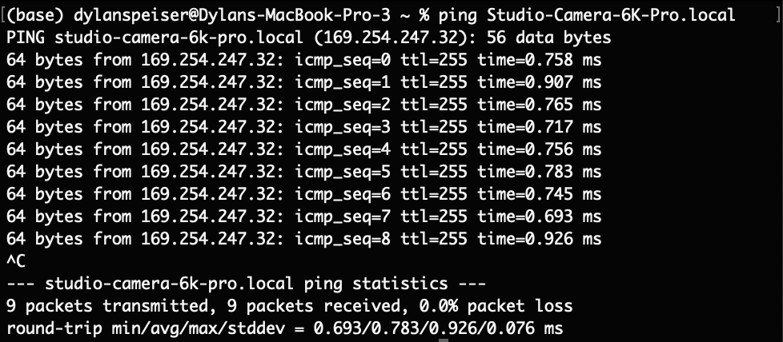
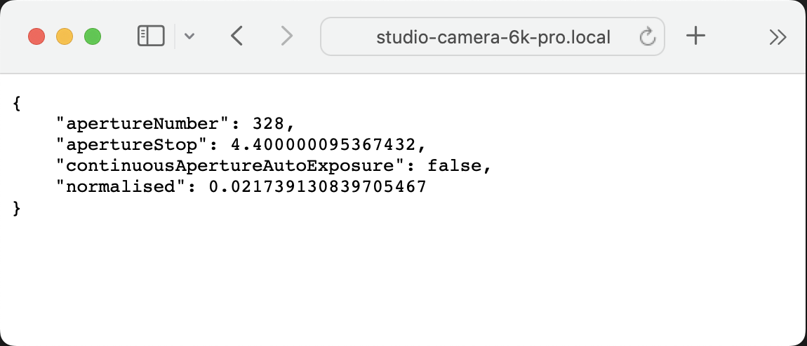

# 1. Rest API Calls
## Camera Setup
Before we can begin talking to the camera over a network connection, we must enable those features in **Blackmagic Camera Setup**,
the official setup utility from Blackmagic. You can download it from their website [here](https://www.blackmagicdesign.com/developer/products/camera/sdk-and-software).
Once you have the utility downloaded, connect the camera to your computer with a USB cable and open the utility.
It will prompt you to update the camera's firmware if it is out of date. If you have any of the following camera models,
this is a _must_, since the networking functionality has just now been enabled in version 8.6.
- Pocket Cinema Camera 4K
- Pocket Cinema Camera 6K
- Pocket Cinema Camera 6K G2
- Pocket Cinema Camera 6K Pro
- Cinema Camera 6K
I'll be using a Studio Camera 6K Pro, whose network control settings after a factory reset look like this:

Factory network settings for Studio Camera 6K Pro
Enable all three protocols, plus utility administration over Ethernet just in case we need to change something down the line.
**Once these settings are enabled, anyone on the network will be able to control the settings and view (and delete) files on the camera.** Make sure you trust the other
machines and humans using the network. That's why equipment like this is usually given its own network, and why it's usually not connected to the internet. My settings now look like this:

New network settings for Studio Camera 6K Pro
If you haven't already, connect the camera to the network with an Ethernet cable (and, if necessary, a USB-C to Ethernet adapter). Configure the IP settings as needed
(choose DHCP if you're unsure).
## Hostname
The camera's "hostname" is a term I'll use a lot in this series. A hostname is a computer's name that can be used to talk to it over a network. Think of it like a more readable
version of an IP address (under the hood, your network does translation between them).
Blackmagic Cameras set their hostnames to reflect the name they've been set to at the top of the settings window (just with spaces replaced with dashes and a `.local` at the end).
So, for example, if your camera's name is "Studio Camera 6K Pro", your hostname would be:
```
Studio-Camera-6K-Pro.local
```
You'll notice that the setup window lists URLs for accessing the camera with different protocols like FTP, SMB, and the web media manager via HTTP. Web browsers understand HTTP and HTTPS protocols,
so you can copy/paste that address into a web browser to access the camera's internal "Web Media Manager", but we'll talk more about that later.
## "Do You Copy?"
To verify that your computer and the camera can talk over the network, disconnect any USB cables and open Blackmagic Camera Setup again. You should see your camera appear
with a LAN icon, as shown here:

Studio Camera 6K Pro connected over the network
You might want to check the connectivity from a different machine that might not have Blackmagic Camera Setup installed. One way that will work on any machine is the `ping` command.
Open your terminal/command line and enter the following command:
```shell
ping <Hostname>
```
When I run this command, I get the following output:

```shell
ping Studio-Camera-6K-Pro.local
```
We can see that my camera has an IP address of `169.254.247.32`. This is the address on the local, closed network, so it isn't a privacy or security risk to show it here.
We can also see that the camera successfully echoed all of the `ping` packets that it received, meaning that the camera and my computer can talk to each other.
Woohoo!
## The API
The [Blackmagic REST API](https://documents.blackmagicdesign.com/DeveloperManuals/RESTAPIforBlackmagicCameras.pdf?_v=1696143610000) works by sending HTTP requests to the device.
Different types of requests are sent to different endpoints, like subpages of a website.
Each HTTP request a machine makes has a "method" that specifies what kind of request it is. The ones that most of the BMD API calls use are:
- `GET` (I'm asking you for some data)
- `PUT` (I'm giving you updates for some data)
Let's look at a sample request:
```HTTP
GET /control/api/v1/lens/iris HTTP/1.1
Accept: text/html,application/xhtml+xml,application/xml;q=0.9,image/avif,image/webp,image/apng,*/*;q=0.8,application/signed-exchange;v=b3;q=0.7
Accept-Encoding: gzip, deflate
Accept-Language: en-US,en;q=0.9
Cache-Control: max-age=0
Connection: keep-alive
Host: studio-camera-6k-pro.local
Upgrade-Insecure-Requests: 1
User-Agent: Mozilla/5.0 (Macintosh; Intel Mac OS X 10_15_7) AppleWebKit/537.36 (KHTML, like Gecko) Chrome/126.0.0.0 Safari/537.36
```
HTTP GET Request Header
and its response:
```HTTP
HTTP/1.1 200 OK
Access-Control-Allow-Origin: *
Cache-Control: no-cache
Content-Length: 153
Content-Type: application/json; charset=utf-8
Server: BlackmagicDesign
{
"apertureNumber": 328,
"apertureStop": 4.400000095367432,
"continuousApertureAutoExposure": false,
"normalised": 0.021739130839705467
}
```
HTTP GET Request Response Header & Data
There's a lot of data that the program sending the request includes in the header, but we're only interested in these lines:
```HTTP
GET /control/api/v1/lens/iris HTTP/1.1
Host: studio-camera-6k-pro.local
```
In English, these lines mean we are sending a `GET` HTTP request to `studio-camera-6k-pro.local` with endpoint `/control/api/v1/lens/iris`.
This endpoint is valid and part of the API, so the camera should respond with details about the lens's aperture settings.
And, sure enough, the camera's response is exactly that. In the header, we see in the first line `200 OK`, which means that the request was successful.
(For more information about HTTP status codes, see ["List of HTTP Status Codes" - Wikipedia](https://en.wikipedia.org/wiki/List_of_HTTP_status_codes).)
The data that came back from the camera is:
```JSON
{
"apertureNumber": 328,
"apertureStop": 4.400000095367432,
"continuousApertureAutoExposure": false,
"normalised": 0.021739130839705467
}
```
This is great news. The camera has returned details about the lens's iris as a JSON Object. JSON is a data format that can organize and store its contents within text strings
to be parsed by other software into data that it can use. All of the API request bodies are in JSON, from the response to a `GET` request to the data
sent in a `PUT` request.
### API Address
Notice that the endpoint in the request is `/control/api/v1/lens/iris`. All of the endpoints in the API start with `/control/api/v1/`, as described in the documentation.
Just like a website, the specific endpoint is concatenated to the end of the protocol and hostname, giving a full address for _this request_ of:
```
http://studio-camera-6k-pro.local/control/api/v1/lens/iris
```
## Our First Request
The documentation from Blackmagic mentions using third-party software like [Postman](https://www.postman.com/) to manually send API calls, but we can do our first ones
right here from a web browser. When you type an address into the top bar of a web browser, it sends a `GET` HTTP (or HTTPS) request to the address in the bar, and displays the body of
the response on the page. Normally, this response is HTML code which the browser renders into a website. But, the JSON response is formatted as text, so it displays that on a plain
page. When I enter the above address into Safari, this is what I see:

Interfacing with the API through a web browser
If you've made it this far, congratulations! You just sent and received your first API call to your camera!
## Basic GET Requests
Using this "type-the-address-into-your-browser" method is a great way to play with the many `GET` requests available to us. Look through the API documentation and find
`GET` requests to try out! For example,
```
http://studio-camera-6k-pro.local/control/api/v1/system/format
```
gives me
```JSON
{
"codec": "BRaw:8_1",
"frameRate": "24",
"maxOffSpeedFrameRate": 60,
"minOffSpeedFrameRate": 5,
"offSpeedEnabled": false,
"offSpeedFrameRate": 60,
"recordResolution": {
"height": 2160,
"width": 3840
},
"sensorResolution": {
"height": 2160,
"width": 3840
}
}
```
and
```
http://studio-camera-6k-pro.local/control/api/v1/video/iso
```
gives me
```JSON
{
"iso": 400
}
```
Of course, typing these by hand into the address bar of a browser is not a super efficient way of having two computers talk to each other, so in the next lesson we'll
see how we can automate this process with JavaScript or Python. This will also open the door for us to send `PUT` commands and change settings on the camera.
See you there!